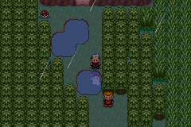
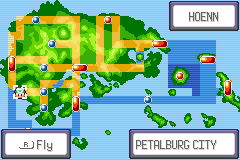
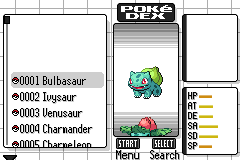

Ambient water ripples, a consistent default frame, clearer menu controls and a corrected Pokédex palette loader.
Start with the default frame, Move/Done and trainer card. The Pokédex color changes are deliberately subtle. Every image is native emulator output, enlarged with sharp pixels.
Route119 uses existing puddle art. A follower and wild Pokémon remain present while ambient rings appear and expire. The effect stays sparse and gives up resources when gameplay needs them.

Lossless animations sample 15 native frames per second. This is visual evidence, not a hardware performance benchmark.
The existing game configuration disables R-Fly. Normal gameplay therefore has no hint. This isolated control enables it to verify placement, while also checking the existing classic-frame and dark-dex options. Fly eligibility itself is unchanged.


Download the tested ROM and prepared save. Keep the files together, open VisualReview.gba, and Continue. The fresh review save is beside Petalburg's pond and includes Town Map. The ZIP contains a 5–10 minute route using normal controls.
This is the project's standard development build, as required by its release policy. The ROM contains no capture hook. The included save is synthetic; the owner's personal save was not used.